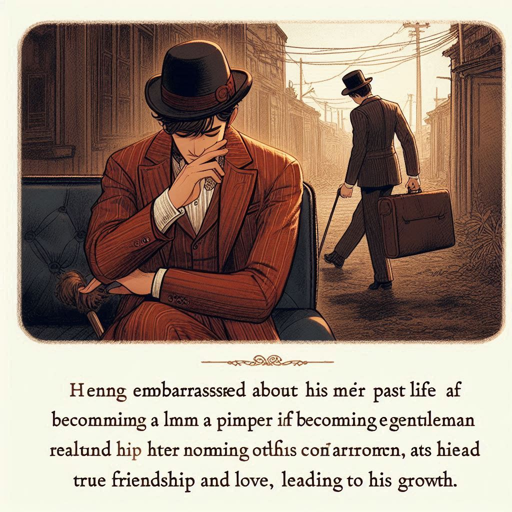

위대한 유산
목차
작가
찰스 디킨스
출판일
1861년
감상평에 대한 AI그림
위대한 유산을 읽고 부와 신분 상승이 행복의 절대적인 조건이 아니며 인간의 본질과 가치를 아는 것이 중요함을 깨닫게 되었다. 주인공 핍은 ‘신사’가 된 후 이전의 가난한 생활을 부끄러워 하며 숨기려 했었다. 하지만 그 후 고향으로 돌아와 진정한 우정과 사랑을 깨닫고 성장하는 모습이 인상깊었다.

감상평에 대한 AI평가
~~~~AI평가~~~~~
✨ 핵심 주제 이해: 부와 신분 상승이 행복의 절대 조건이 아니라는 점과 인간의 본질과 가치의 중요성을 강조한 점이 좋습니다.
✨ 주인공의 변화 과정 설명: 핍이 신사가 된 후 과거를 부끄러워했지만, 결국 진정한 우정과 사랑을 깨닫고 성장하는 과정이 잘 서술되었습니다.
✨개인적인 느낌 반영: "인상 깊었다"라는 표현을 통해 감상자의 감정을 담았다는 점이 자연스럽습니다.